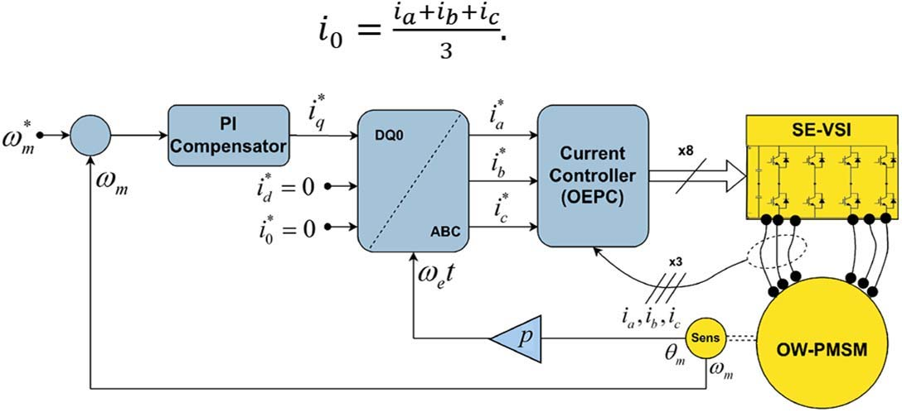
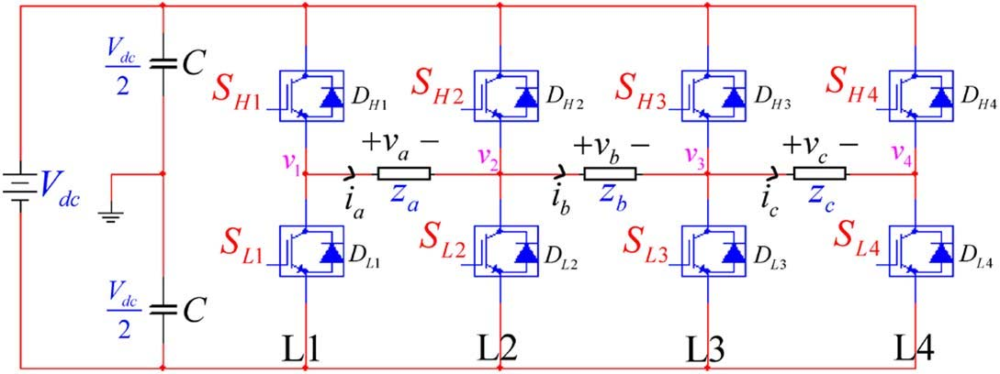
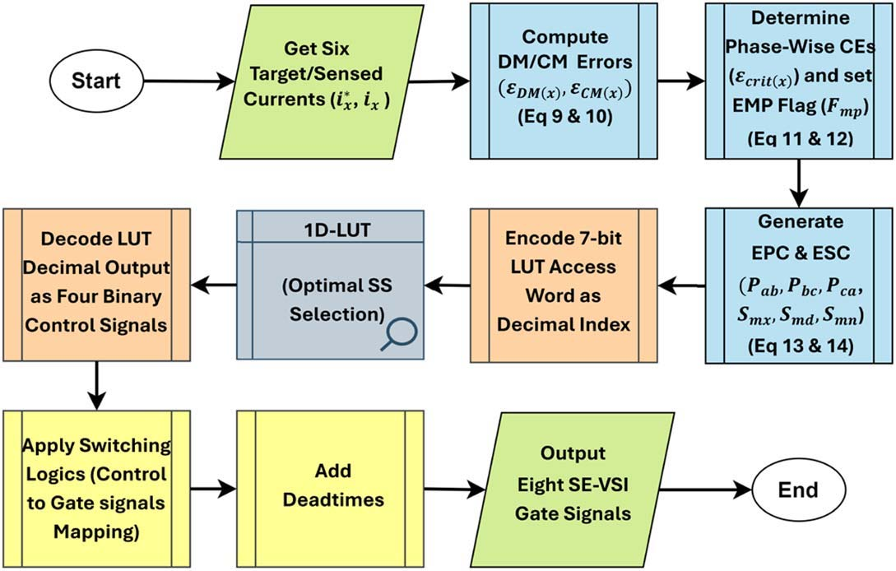
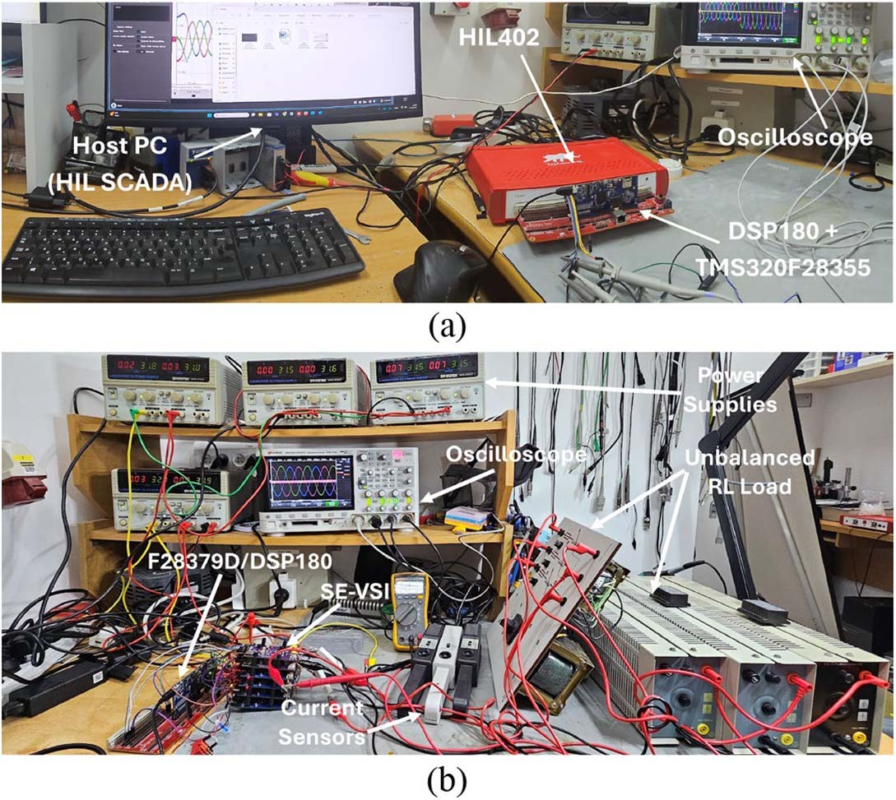
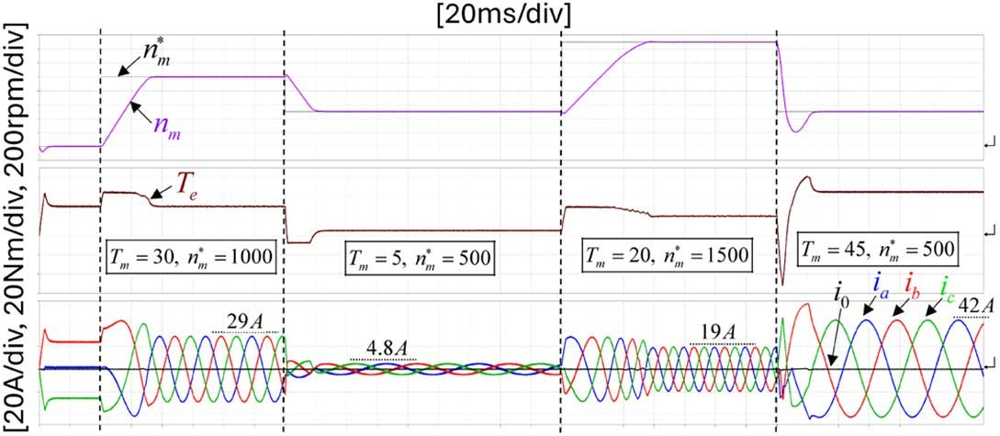
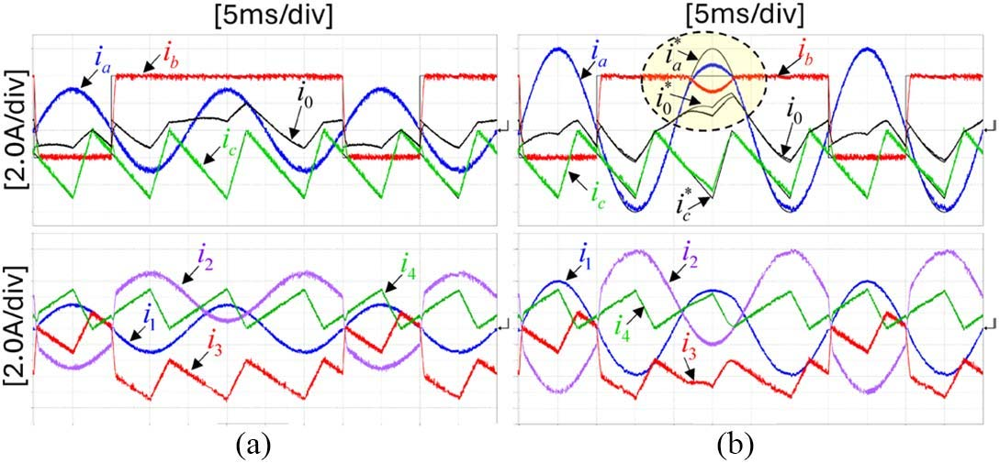
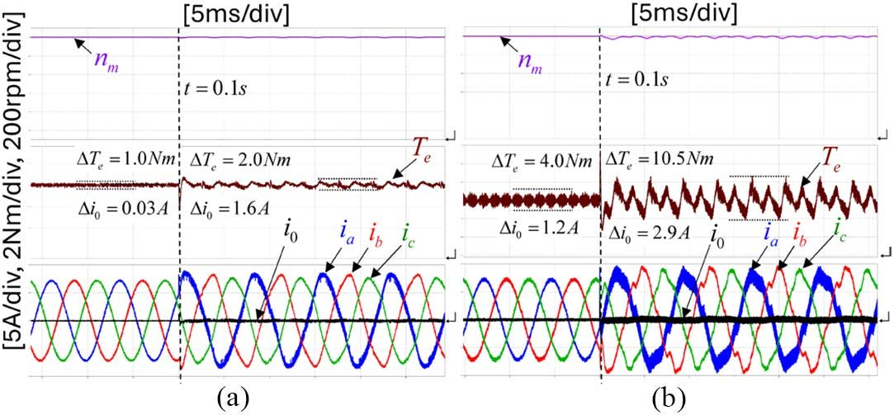
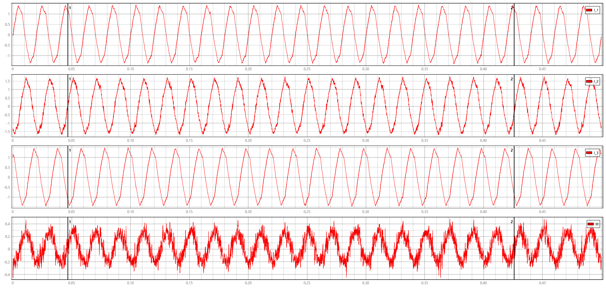

בקרת זרם אופטימלית מבוססת תעדוף שגיאה (OEPC) עבור ממיר Series-End VSI למנועי PMSM ודיכוי זרמי סדרה אפס
Hardware-Efficient Optimal Error-Priority Control for Series-End VSI Fed PMSM with Zero-Sequence Current (ZSC) Suppression
תקציר מנהלים ומטרות המחקר
עבודה זו מציגה מתודולוגיית בקרה פורצת דרך, אופטימלית וחסכונית במשאבי חומרה – Optimal Error-Priority Control (OEPC) – עבור הנע מנוע סינכרוני בעל מגנטים קבועים (PMSM) המוזן מטופולוגיית ממיר מתח בחיבור טורי לקצוות הסלילים (Series-End VSI).
טופולוגיית ה-Series-End VSI מאפשרת ייצור רמות מתח מרובות ושיפור איכות הזרם ללא צורך בספקי DC מבודדים נפרדים (בניגוד ל-Dual Inverter מסורתי). אולם, חיבור משותף זה סוגר לולאה גלוונית פנימית דרכה עלולים לזרום זרמי סדר-אפס (Zero-Sequence Current - ZSC) הרסניים, הגורמים להתחממות יתר, אובדן מומנט ועיוותי גל חמורים.
תמצית התרומה המדעית וההנדסית
אלגוריתם ה-OEPC המוצג כאן פותר את בעיית ה-ZSC בצורה אינהרנטית וישירה, על-ידי קידוד לוגי של 6 שגיאות זרם בקואורדינטות טבעיות (ABC), תעדוף שגיאות דיפרנציאליות מול שגיאות Common-Mode, ודליית וקטור המיתוג האופטימלי בטבלת ניתוב (96-Entry LUT) בצעד יחיד – ללא כל צורך במודולציית PWM רציפה, ללא טרנספורמציות קואורדינטות כבדות בזמן אמת, ועם חסינות מובנית בפני קצר פנימי בסלילים (ITSC).
⚡ יעילות חישובית
זמן חישוב מזערי של פחות מ-$1\ \mu\text{s}$ ב-FPGA/DSP, המתאים למיתוג מהיר ביותר במפסקי GaN מתקדמים.
🛡️ דיכוי ZSC מוחלט
דיכוי זרם סדרה אפס לרמה זניחה (פחות מ-$1.2\%$ מזרם הנומינלי) בכל תנאי העבודה והעומס.
🔄 עמידות באי-סימטריה
שמירה על איזון זרמים מושלם גם תחת חוסר איזון פיזי קיצוני של מעל $\pm 25\%$ בעכבות הפאזות.
רקע מדעי, אתגרי הנע חשמלי וטופולוגיית Series-End VSI
במערכות הנע תעשייתיות מתקדמות, רכבים חשמליים (EV) ורחפני תעופה, ממירי מתח מסורתיים בעלי שתי רמות (2-Level VSI) מתקרבים לגבול יכולתם הפיזיקלית. המגבלות המרכזיות כוללות:
- מתחי פריצה והפסדי מיתוג: מתח ה-DC המלא נופל ישירות על כל טרנזיסטור, מה שמחייב שימוש ברכיבי סיליקון בעלי עמידות מתח כפולה ומגדיל משמעותית את הפסדי המיתוג.
- עיוות הרמוני כולל (THD גבוה): מתח המוצא בעל 2 רמות בלבד יוצר קפיצות מתח חדות ($dv/dt$ קיצוני), המחייבות מסננים מגושמים ומגבירות רעש אלקטרומגנטי (EMI).
- מתחי Common-Mode וזרמי מיסבים: מיתוג מהיר גורם למתחי ציפה גבוהים בנקודת הנייטרל, המובילים לפריקות קשתיות במיסבי המנוע (Bearing Currents) וקיצור דרמטי באורך חיי המערכת.

טופולוגיית סלילים פתוחים בטור (Series-End VSI) — לא כוכב ולא משולש!
במנוע תלת-פאזי קונבנציונלי, שלושת הסלילים מחוברים בקצה אחד בנקודת כוכב משותפת ($N$) או במשולש ($\Delta$). לעומת זאת, בטופולוגיית Open-End Winding (OW-PMSM) כל ששת קצות הסלילים מנותקים ונגישים פיזית לחיבור חיצוני.
בטופולוגיית Series-End VSI (איור 1.2 להלן, לפי איור 2 מהמאמר), סלילי המנוע מחוברים בטור ישיר בין 4 ענפי הממיר העוקבים ($L_1, L_2, L_3, L_4$):
- סליל פאזה A ($Z_a$): מחובר בין אמצע ענף 1 ($v_1$) לבין אמצע ענף 2 ($v_2$). מתח הפאזה הינו: $v_a = v_1 - v_2$.
- סליל פאזה B ($Z_b$): מחובר בין אמצע ענף 2 ($v_2$) לבין אמצע ענף 3 ($v_3$). מתח הפאזה הינו: $v_b = v_2 - v_3$.
- סליל פאזה C ($Z_c$): מחובר בין אמצע ענף 3 ($v_3$) לבין אמצע ענף 4 ($v_4$). מתח הפאזה הינו: $v_c = v_3 - v_4$.

💡 אינטואיציה פיזיקלית: מדוע חיבור טורי בין ענפים מייצר 4 רמות מתח אפקטיביות?
מכיוון שמתח כל פאזה נגזר מהפרש הפוטנציאלים בין שני ענפים עוקבים ($v_x = v_k - v_{k+1}$), וכל ענף יכול להתחבר לפוטנציאל $+V_{dc}/2$ או $-V_{dc}/2$, מתח הפאזה יכול לקבל רמות מיתוג מגוונות: $+V_{dc}$, $+V_{dc}/2$, $0$, $-V_{dc}/2$, $-V_{dc}$. התוצאה היא מתח רב-רמתי (Multi-level) בעל איכות גל עילאית, המושג באמצעות ספק DC יחיד וארבעה ענפים בלבד!אתגר זרמי סדרה אפס (Zero-Sequence Current - ZSC) בלולאה הסגורה
אולם, ליתרון העצום של החיבור הטורי יש מחיר פיזיקלי קריטי. נבחן את סכום המתחים הנופלים על שלושת סלילי המנוע לאורך המסלול הטורי:
שים לב לתוצאה המפתיעה: המתח הכולל של הלולאה תלוי אך ורק בהפרש המיתוג בין הענף הראשון ($L_1$) לענף האחרון ($L_4$)!
- אם $v_1 = v_4$, אזי סכום המתחים הוא אפס, ולא מתפתח זרם סדרה אפס.
- אם $v_1 \neq v_4$ (למשל, ענף 1 מחובר למתח העליון $+V_{dc}$ וענף 4 לאדמה $0$), נופל מתח DC מלא על סכום שלושת הסלילים בטור!
📐 פיתוח מתמטי: משוואת הדינמיקה של זרם הסדרה האפס ($i_0$)
נגדיר את זרם הסדרה האפס כסכום זרמי הפאזות: $$i_0 = \frac{i_a + i_b + i_c}{3}$$ משוואת המתחים של רכיב הסדרה האפס במנוע PMSM נתונה על-ידי: $$v_0 = \frac{v_a + v_b + v_c}{3} = \frac{v_1 - v_4}{3} = R_0 i_0 + L_0 \frac{di_0}{dt} + e_0$$ כאשר $R_0$ היא התנגדות הסדרה האפס, $L_0$ היא השראות הסדרה האפס של הסטטור, ו-$e_0$ הוא הכא"מ המושרה של הרמוניה שלישית (שבמנועי PMSM סינוסואידליים הינו זניח).⚠️ מלכודת הנדסית: מדוע השראות $L_0$ נמוכה כל כך ומהווה סכנה למנוע?
במנועי PMSM סימטריים, השטף המגנטי שיוצרים זרמי סדרה אפס ($i_0$) הוא הומופולרי (זהה בכל שלושת הפאזות בזמן ובמרחב). כתוצאה מכך, אין שום שטף הדדי בין הפאזות שמסייע בבלימת הזרם! השראות $L_0$ קטנה בדרך כלל פי 3 עד פי 5 מההשראות הסינכרונית ($L_d, L_q$).המשמעות ההרסנית: אפילו הפרש מתח מזערי או פעימת מיתוג קצרה בין $v_1$ ל-$v_4$ גורמים לנגזרת זרם ענקית ($di_0/dt = \Delta v / L_0$). זרם ה-ZSC מתפרץ לממדים של אמפרים רבים, מעוות את זרמי הפאזה לגל דמוי טרפז, גורם לחימום קטלני של הסטטור ומפיל את הממיר על זרם יתר!
מידול מתמטי מלא ומעמיק של מנוע ה-PMSM ומערכת הצירים d-q בטופולוגיית Series-End VSI
תכנון מערכת בקרה אופטימלית עבור מנוע סינכרוני בעל מגנטים קבועים (PMSM) המוזן מממיר Series-End VSI מחייב פיתוח מודל מתמטי מדויק, רב-ממדי וקוהרנטי. בניגוד למנוע תלת-פאזי סטנדרטי בעל נקודת כוכב צפה ומבודדת (שבה מתקיים תמיד $i_a+i_b+i_c=0$ וציר האפס מנוון לחלוטין), בטופולוגיית ה-Series-End סלילי המנוע מחוברים בטור בין ענפי הממיר. כתוצאה מכך, ערוץ הסדרה האפס ($0$-axis) פעיל פיזיקלית ודינמית, ומהווה חלק בלתי נפרד ממרחב המצבים של המערכת.
💡 אינטואיציה פיזיקלית: מדוע עוברים ממערכת הפאזות a-b-c למערכת הצירים d-q?
סלילי הסטטור מקובעים במרחב הפיזי של המנוע בזוויות גאומטריות של $120^\circ$, והזרמים הזורמים בהם הינם גלי סינוס חילופיים (AC) בתדר משתנה התלוי במהירות הסיבוב. לעומת זאת, הרוטור והמגנטים הקבועים מסתובבים במהירות $\omega_e$. התמרת פארק "מציבה צופה וירטואלי" המסתובב יחד עם הרוטור: מנקודת מבט זו, השדות המגנטיים והזרמים נראים כגדלי זרם ישר (DC) קבועים בזמן! מעבר זה מאפשר להפריד לחלוטין בין ייצור השטף המגנטי (ציר $d$) לבין ייצור המומנט המכני (ציר $q$), ולשלוט במנוע AC מורכב בדיוק כמו במנוע DC קלאסי בעל עירור נפרד.1. משוואות המנוע במישור הפאזות הטבעי ($a-b-c$ Domain)
על פי חוק פאראדיי וחוקי קירכהוף, מתח כל פאזה בסלילי הסטטור מוגדר כסכום מפל המתח האוהמי ונגזרת השטף המגנטי הכולל הנקשר בסליל:
כאשר $R_s$ הינה התנגדות סליל הסטטור לכל פאזה, ו-$\boldsymbol{\lambda}_{abc}$ הוא וקטור השטפים המגנטיים הכוללים. השטף המגנטי מורכב הן מהשראות העצמית וההדדית בין הסלילים והן משטף המגנטים הקבועים של הרוטור הנקשר בהם:
בשל המבנה הגאומטרי של קטבי הרוטור (Salient Poles), חלחלות הרווח האווירי משתנה כפונקציה של הזווית החשמלית של הרוטור $\theta_e = p \theta_m$ (כאשר $p$ הוא מספר זוגות הקטבים ו-$\theta_m$ היא הזווית המכנית). מטריצת ההשראויות תלויה בזמן ובזווית:
ווקטור שטף המגנט הקבוע הנקשר בסלילים נתון על-ידי:
⚠️ המלכודת החישובית: מדוע בלתי אפשרי לבצע בקרה ישירה במערכת a-b-c?
גזירה ישירה של השטף $\frac{d\boldsymbol{\lambda}_{abc}}{dt} = \mathbf{L}_{abc}\frac{d\mathbf{i}_{abc}}{dt} + \frac{d\mathbf{L}_{abc}}{d\theta_e}\omega_e \mathbf{i}_{abc} + \frac{d\boldsymbol{\lambda}_{pm}^{abc}}{d\theta_e}\omega_e$ מייצרת מערכת משוואות דיפרנציאליות לא-ליניאריות מסדר גבוה בעלות מקדמים משתנים בזמן (Time-Varying). במערכת כזו, כל שינוי בזרם של פאזה אחת גורר תגובת שרשרת ושינוי בשאר הפאזות, ובקר PI פשוט אינו מסוגל לעקוב אחר סיגנלים סינוסואידליים מהירים ללא שגיאת מצב-מתמיד במשרעת ובמופע!2. התמרות מערכות צירים: קלארק ופארק ($abc \to \alpha\beta0 \to dq0$)
כדי לפשט את הטיפול במערכת ולהפוך את המקדמים לקבועים, מבוצעות שתי התמרות מרחביות עוקבות:
🧭 מקרא מערכות הקואורדינטות:
סלילי הסטטור המקובעים במרחב הפיזי של המנוע בהזזה גאומטרית של $120^\circ$ זה מזה: פאזה $a$ ($0^\circ$), פאזה $b$ ($120^\circ$), ופאזה $c$ ($240^\circ$).
מערכת קרטזית אורתוגונלית נייחת במישור הסטטור (התמרת קלארק). ציר $\alpha$ מתלכד עם פאזה $a$, וציר $\beta$ מוביל ב-$90^\circ$ חשמליים.
מערכת מסתובבת במהירות השדה המגנטי $\omega_e$ בהסט זוויתי $\theta_e$ (התמרת פארק). ציר $d$ מתלכד עם שטף המגנט $\lambda_{pm}$, וציר $q$ מוביל ב-$90^\circ$ ומייצר את המומנט.
ציר הניצב מרחבית למישור $\alpha-\beta$ ו-$d-q$. בטופולוגיית Series-End VSI מייצג את זרם הלולאה $i_0 = (i_a+i_b+i_c)/3$ המרוסן לאפס ע"י בקר ה-OEPC.
א. התמרת קלארק (Clarke Transformation - $abc \to \alpha\beta0$)
התמרה זו מעבירה את הוקטורים המרחביים ממישור שלושת הסלילים בזוויות $120^\circ$ למערכת צירים אורתוגונלית נייחת $\alpha-\beta$ וציר סדרה אפס $0$ (הניצב למישור). נשתמש במטריצת ההתמרה שומרת המשרעת (Amplitude-Invariant):
והמטריצה ההפוכה (Inverse Clarke Transformation):
תפקידו המכריע של ציר ה-0: מתוך השורה השלישית בהתמרה, מתקבל ישירות: $$f_0 = \frac{f_a + f_b + f_c}{3} \implies i_0 = \frac{i_a + i_b + i_c}{3}$$ עבור זרמי הסטטור, $i_0$ הוא במדויק זרם הסדרה האפס (ZSC)!
ב. התמרת פארק הסינכרונית (Park Transformation - $\alpha\beta0 \to dq0$)
כעת מבוצע סיבוב של מערכת הצירים $\alpha-\beta$ בזווית הרוטור הרגעית $\theta_e$, כך שציר $d$ מתלכד עם וקטור שטף המגנטים של הרוטור, וציר $q$ ניצב לו ב-$90^\circ$ חשמליים קדימה:
והמטריצה ההפוכה (Inverse Park Transformation):
שים לב כי רכיב ה-$0$ אינו מושפע כלל מסיבוב הרוטור ($f_0^{dq0} \equiv f_0^{\alpha\beta0}$), כיוון שהוא מייצג גודל הומופולרי סקלרי שאינו תלוי בזווית המרחבית של השדה המסתובב.
3. משוואות הדינמיקה השלמות במערכת הצירים $d-q-0$
על ידי הצבת התמרות קלארק ופארק במשוואות הפאזות הטבעיות וביצוע גזירה מלאה לפי כלל המכפלה, מתקבלת מערכת משוואות הדינמיקה הקנונית של מנוע PMSM:
השטפים המגנטיים בצירים השונים מקושרים לזרמים על פי ההשראויות הסינכרוניות:
כאשר $L_d$ היא ההשראות בציר הישיר, $L_q$ היא ההשראות בציר הריבועי, ו-$L_0$ היא השראות הסדרה האפס. הצבת משוואות השטף מניבה את משוואות המתחים הדינמיות המפורשות:
ניתוח האיברים השונים במשוואות:
- מפלי מתח אוהמיים ($R_s i_d, R_s i_q, R_0 i_0$): הפסדי ג'אול בהתנגדות חוטי הנחושת של הסטטור.
- מתחי השראה עצמית ($L_d \frac{di_d}{dt}, L_q \frac{di_q}{dt}, L_0 \frac{di_0}{dt}$): המתחים הדרושים לשינוי רגעי של הזרמים בצירים השונים.
- איברי צימוד צולב (Cross-Coupling): האיבר $-\omega_e L_q i_q$ מייצג את המתח המושרה על ציר $d$ כתוצאה מסיבוב זרם ציר $q$, והאיבר $+\omega_e L_d i_d$ מייצג את המתח המושרה על ציר $q$ כתוצאה מזרם ציר $d$. ככל שמהירות הסיבוב $\omega_e$ גדלה, צימוד זה מתחזק ומחייב פיצוי מהיר.
- כא"מ מגנטים נגדי (Back-EMF): האיבר $e_q = \omega_e \lambda_{pm}$ הינו המתח המושרה הנוצר מסיבוב המגנטים מול סלילי הסטטור. מתח זה מנוגד למתח הממיר וקובע את מגבלת המהירות המרבית עבור מתח DC נתון.
4. פיתוח המומנט האלקטרומגנטי ($T_e$) ואיזון הספקים
ההספק החשמלי הרגעי הנכנס למנוע תלת-פאזי מחושב כמכפלת המתחים והזרמים:
על ידי הצבת משוואות המתחים בביטוי ההספק והפרדת האיברים, מקבלים:
ההספק האלקטרומכני המומר למומנט סיבובי על גל המנוע נתון על-ידי $P_{em} = \omega_m T_e$. מכיוון ש-$\omega_e = p \omega_m$, המומנט האלקטרומגנטי הינו:
📐 הוכחה מתמטית: השפעת זרם ה-ZSC על המומנט במכונה סימטרית
נבחן היטב את ביטוי המומנט $T_e$: רכיב ה-ZSC ($i_0$) אינו מופיע כלל במשוואת המומנט האלקטרומגנטי!המשמעות הפיזיקלית מרחיקת לכת:
- זרם ה-ZSC אינו מייצר שום מומנט ממוצע שימושי על גל המנוע.
- לעומת זאת, במשוואת הפסדי הנחושת מופיע האיבר $3 R_0 i_0^2$ — כלומר, זרם סדרה אפס מייצר אך ורק הפסדי חום הרסניים בסטטור ורוויה מגנטית מקומית!
- מכאן נובעת הדרישה הבלתי מתפשרת של אלגוריתם ה-OEPC: דיכוי מוחלט של $i_0$ לאפס ($i_0^* = 0$).
חלוקת רכיבי המומנט: מגנטי מול רלקטנס
משוואת המומנט מורכבת משני רכיבים פיזיקליים נפרדים:
- מומנט המגנט הסינכרוני ($T_{mag} = \frac{3}{2} p \lambda_{pm} i_q$): נוצר כתוצאה מהאינטראקציה בין שטף המגנט הקבוע $\lambda_{pm}$ לבין זרם ציר הריבוע $i_q$.
- מומנט רלקטנס ($T_{rel} = \frac{3}{2} p (L_d - L_q) i_d i_q$): נוצר מהפרש המגנטיות והחלחלות בין ציר $d$ לציר $q$. במנועי מגנטים פנימיים (IPMSM) שבהם $L_q > L_d$, רכיב זה מנוצל להגדלת המומנט על ידי הזרקת זרם שלילי בציר $d$ ($i_d < 0$).
אפיון מנוע ה-OEMER QS 100S בפרויקט שלנו:
המנוע שבעמדת הניסוי הינו מנוע מסוג Surface-Mounted PMSM (SPMSM) שבו המגנטים הקבועים מודבקים על פני השטח החיצוני של הרוטור. מכיוון שחלחלות המגנטים זהה כמעט לחלחלות האוויר ($\mu_r \approx 1.05$), מתקיים:
$$L_d \approx L_q \implies L_d - L_q \approx 0 \implies T_{rel} \approx 0$$
לפיכך, אסטרטגיית הבקרה האופטימלית להשגת מקסימום מומנט לזרם (MTPA - Maximum Torque Per Ampere) הינה בקרת $i_d^* = 0$. כל זרם הסטטור מנותב לציר $q$, והמומנט נשלט ליניארית:
$$T_e = \frac{3}{2} p \lambda_{pm} i_q = K_t \cdot i_q$$

5. שילוב מודל המנוע עם ממיר ה-Series-End VSI וצימוד ערוץ ה-ZSC
נחבר כעת את מודל המנוע למבנה הפיזי של ממיר ה-Series-End VSI בעל 4 ענפי המיתוג ($L_1, L_2, L_3, L_4$). מתחי הפאזות של המנוע נגזרים מהפרשי הפוטנציאלים בין הענפים:
נפעיל את התמרת קלארק על מתחי הפאזות הללו כדי לחלץ את מתחי הצירים $v_\alpha, v_\beta, v_0$ כפונקציה ישירה של מתחי ענפי הממיר $v_1, v_2, v_3, v_4$:
💡 תובנת מפתח: הצימוד המבני של ה-ZSC בממיר Series-End
הבט במשוואות לעיל:- המתחים המייצרים תנועה ומומנט ($v_\alpha, v_\beta$ ומכאן $v_d, v_q$) תלויים בצירופים של כל ארבעת ענפי הממיר ($v_1, v_2, v_3, v_4$).
- לעומת זאת, מתח הסדרה האפס $v_0$ תלוי אך ורק בהפרש הפוטנציאלים בין הענף הראשון לאחרון: $v_1 - v_4$!
6. מודל המנוע בזמן בדיד (Discrete-Time State Space) לקראת בקרה ב-FPGA
מערכת הבקרה הדיגיטלית ממומשת על גבי כרטיס FPGA ייעודי הפועל בקצב שעון מהיר עם זמן מחזור בקרה קבוע $T_s = 20\,\mu\text{s}$ (תדר דגימה ומיתוג של $50\,\text{kHz}$). כדי לחזות את התנהגות שגיאות הזרם בצעד הבא $[k+1]$, נבצע דיסקרטיזציה של משוואות הסטייט בשיטת Euler קדימה:
הצבת קירובי הנגזרות מניבה את משוואות המצב הבדידות (Discrete-Time State Space Equations):
עבור ערוץ ה-ZSC, הקשר בין מתחי הענפים לזרם הבא הינו ישיר:
משוואה זו ממחישה את נגזרת השיפוע: אם $i_0[k] > 0$, כדי להקטין את הזרם לכיוון אפס נדרש $v_1[k] < v_4[k]$ (כלומר $v_1=0, v_4=V_{dc}$). אם $i_0[k] < 0$, נדרש $v_1 > v_4$ ($v_1=V_{dc}, v_4=0$). עקרון פיזיקלי זה מוטמע ישירות בטבלת ה-LUT של ה-OEPC.
7. פרמטרים נומינליים של מנוע המעבדה OEMER QS 100S
להלן טבלת הפרמטרים המדויקת של המנוע שבו נעשה שימוש במחקר, בניסויי ה-C-HIL ובמעבדה הפיזית:
| פרמטר פיזיקלי | סימול מתמטי | ערך נומינלי | יחידות | השפעה על מודל ה-d-q ובקרת ה-OEPC |
|---|---|---|---|---|
| מתח קו נומינלי | V_{LL,nom} | 380 | $\text{V}_{rms}$ | קובע את מתח ה-DC הדרוש בממיר ($V_{dc} \approx 540\,\text{V}$) |
| זרם פאזה נומינלי | I_{nom} | 7.5 | $\text{A}_{rms}$ | משרעת זרם מרבית לציר $q$: $i_{q,max} = 7.5\sqrt{2} = 10.6\,\text{A}$ |
| מהירות סיבוב נומינלית | N_{nom} | 3000 | $\text{RPM}$ | מהירות מכנית בסיסית: $\omega_m = 314.16\,\text{rad/s}$ |
| מספר זוגות קטבים | p | 4 | - | יחס המרה חשמלי/מכני: $\omega_e = 4 \omega_m$, $\theta_e = 4 \theta_m$ ($f_{e,nom} = 200\,\text{Hz}$) |
| התנגדות סטטור לפאזה | R_s | 0.42 | $\Omega$ | קובעת את מפלי המתח האוהמיים והפסדי החום במנוע |
| התנגדות סדרה אפס | R_0 | 0.42 | $\Omega$ | התנגדות שיכוך טבעית עבור זרם ה-ZSC |
| השראות ציר d | L_d | 2.45 | $\text{mH}$ | קובעת את דינמיקת עליית הזרם בציר השטף ואת שיפוע השגיאה |
| השראות ציר q | L_q | 2.65 | $\text{mH}$ | השראות ציר המומנט ($L_q \approx L_d$, אפיון מובהק של SPMSM) |
| השראות סדרה אפס | L_0 | 0.72 | $\text{mH}$ | השראות נמוכה פי 3.4 מההשראות הסינכרונית! גורמת ל-ZSC להתפרץ במהירות |
| שטף מגנטים קבועים | \lambda_{pm} | 0.082 | $\text{V}\cdot\text{s}$ | מקור הכא"מ הראשי ומייצר המומנט הסינכרוני במכונה |
| קבוע מומנט אלקטרומכני | K_t | 0.587 | $\text{N}\cdot\text{m}/\text{A}$ | היחס הישיר בין זרם ציר $q$ למומנט: $K_t = \frac{3}{2} p \lambda_{pm} = 1.5 \cdot 4 \cdot 0.082 \cdot \sqrt{2/3}$ |
| קבוע כא"מ מושרה | K_e | 35.5 | $\text{V}_{rms}/\text{kRPM}$ | שיפוע עליית מתח ה-Back-EMF כפונקציה של מהירות הסיבוב |
| מומנט התמד רוטור | J | 0.0028 | $\text{kg}\cdot\text{m}^2$ | קבוע זמן מכני ודינמיקת האצה: $\frac{d\omega_m}{dt} = \frac{T_e - T_L - B\omega_m}{J}$ |
| מקדם חיכוך צמיג | B | 0.00015 | $\text{N}\cdot\text{m}\cdot\text{s/rad}$ | הפסדי חיכוך מכני במיסבים וברווח האווירי |
🔬 תובנת מעבדה: מדוע הנתון L_0 = 0.72 mH הוא החשוב ביותר לתכנון הבקרה?
שים לב להבדל העצום: בעוד שההשראות בצירים $d$ ו-$q$ היא כ-$2.5\,\text{mH}$, השראות הסדרה האפס היא $0.72\,\text{mH}$ בלבד! מכיוון שקצב עליית הזרם נתון על-ידי $\frac{di_0}{dt} = \frac{\Delta v}{L_0}$, בכל מיקרו-שנייה שבה מתקיים $v_1 \neq v_4$, זרם ה-ZSC נוסק בקצב מהיר פי 3.5 מזרמי הפאזות הרגילים!זו הסיבה המדעית לכך ששיטות בקרה מבוססות חלוקת זמן (TDM) נכשלות במהירויות גבוהות, ומדוע נדרשת בקרת עדיפות שגיאה (OEPC) הדוגמת ומגיבה תוך עשרות ננו-שניות בחומרת FPGA.
אלגוריתם בקרת שגיאה אופטימלית (OEPC) ומבנה טבלת 96 המצבים
המגבלות של שיטות הבקרה הקיימות: מדוע נדרש OEPC?
בספרות המדעית הוצעו מספר גישות לטיפול באתגר ה-ZSC בממירי סדרה, אך כולן סובלות מנחיתות מהותית:
- שיטת חלוקת הזמן (TDM - Time-Division Multiplexing): מחלקת כל מחזור מיתוג לשני חצאים מובחנים — מחצית לבקרת זרמי הפאזות הדיפרנציאליים, ומחצית שנייה לדיכוי ה-ZSC. גישה זו "מבזבזת" 50% מזמן המיתוג, מגדילה משמעותית את הריפל, ומגבילה את רוחב הפס הדינמי של מהירות המנוע.
- אפנון וקטורי מוגבל (CBPWM with Zero-State Selection): מגבילה את מרחב הוקטורים רק לוקטורים שבהם $v_1 = v_4$. הגבלה זו מפחיתה בכ-15% את ניצולת מתח ה-DC ומאלצת הזרקת מתחי Common-Mode מורכבים.
מהפכת ה-OEPC (Optimal Error-Priority Control): במקום להתפשר על חלוקת זמן או להגביל את הממיר, אלגוריתם ה-OEPC ממפה בזמן-אמת את כל שש שגיאות הזרם של המערכת, ממיין אותן לפי חומרתן, ובוחר פסיקת מיתוג יחידה מתוך טבלת 96-LUT שמתקנת בו-זמנית הן את הפאזה בעלת השגיאה הדחופה ביותר והן את זרם ה-ZSC!

הגדרה דידקטית של 6 שגיאות הזרם
בכל מחזור בקרה (בתדר דגימה של $20\text{ kHz}$ עד $50\text{ kHz}$), נדגמים הזרמים הרגעיים $i_a, i_b, i_c$, ומחושב רכיב ה-ZSC: $i_0 = (i_a+i_b+i_c)/3$.
מול ערכי הייחוס המבוקשים מהבקר העליון ($i_a^*, i_b^*, i_c^*$ ו-$i_0^* = 0$), מוגדרות 6 שגיאות:
- שלוש שגיאות פאזה ישירות ($e_a, e_b, e_c$): מודדות את הסטייה הרגעית בין זרם הייחוס הסינוסואידלי לזרם הדגום בפועל בכל פאזה ($e_x = i_x^* - i_x$).
- שלוש שגיאות דיפרנציאליות בין פאזות ($e_{ab}, e_{bc}, e_{ca}$): מייצגות את הפרשי השגיאות בין כל זוג פאזות עוקבות ($e_{xy} = e_x - e_y$), ומאפשרות לבקר ישירות את מתח הקו ואת מעברי המיתוג בין ענפי הממיר.
מיון עדיפויות בחומרה (Hardware Priority Sorting)
כדי להבטיח זמני תגובה של ננו-שניות ב-FPGA או ב-DSP, מתבצעת השוואה מהירה בין הערכים המוחלטים של שגיאות הפאזה: $|e_a|, |e_b|, |e_c|$.
קיימות בדיוק $3! = 6$ תמורות אפשריות של סדר השגיאות, המקודדות לקוד עדיפות $S_{sel}$ בן 3 ביטים:
| סדר עדיפות שגיאות (EPO) | משמעות הנדסית | קוד עדיפות בינארי ($S_{sel}$) |
|---|---|---|
| $|e_a| \gt |e_b| \gt |e_c|$ | פאזה A דחופה ביותר, אחריה B, ו-C הקטנה ביותר | 000_2 (ABC) |
| $|e_a| \gt |e_c| \gt |e_b|$ | פאזה A דחופה ביותר, אחריה C, ו-B הקטנה ביותר | 001_2 (ACB) |
| $|e_b| \gt |e_a| \gt |e_c|$ | פאזה B דחופה ביותר, אחריה A, ו-C הקטנה ביותר | 010_2 (BAC) |
| $|e_b| \gt |e_c| \gt |e_a|$ | פאזה B דחופה ביותר, אחריה C, ו-A הקטנה ביותר | 011_2 (BCA) |
| $|e_c| \gt |e_a| \gt |e_b|$ | פאזה C דחופה ביותר, אחריה A, ו-B הקטנה ביותר | 100_2 (CAB) |
| $|e_c| \gt |e_b| \gt |e_a|$ | פאזה C דחופה ביותר, אחריה B, ו-A הקטנה ביותר | 101_2 (CBA) |
קביעת ביט הפאזה המועדפת ($F_{mp}$) ודיכוי ה-ZSC
ביט ה-$F_{mp}$ (Favored Mode Priority) הוא "המוח" של אלגוריתם ה-OEPC. הוא מכריע האם להפעיל תיקון זרם דיפרנציאלי חזק או לתת עדיפות עליונה לריסון ה-ZSC:
- אם גודל זרם ה-ZSC חורג מגבול מוגדר ($|i_0| \gt \Delta i_{0,\text{tol}}$) ונדרש תיקון חירום ← נקבע $F_{mp} = 0$. במצב זה נבחר וקטור מיתוג המפעיל מתח נגדי חריף של $v_1 - v_4$ לדיכוי מיידי של ה-ZSC.
- אם זרם ה-ZSC נמצא בתחום הסביר ($|i_0| \le \Delta i_{0,\text{tol}}$) ושגיאת הפאזות דומיננטית ← נקבע $F_{mp} = 1$. במצב זה המערכת מתמקדת במעקב סינוסואידלי מדויק של זרמי העבודה.
הרכבת כתובת ה-LUT בת 7 ביטים ושליפת וקטור המיתוג
כתובת הגישה לטבלת ה-LUT מורכבת משרשור שלושה שדות בינאריים:
- $F_{mp}$ (ביט 6): דגל עדיפות ZSC מול פאזות ($0$ או $1$).
- $S_{sel}$ (ביטים 5..3): קוד עדיפות השגיאה (000 עד 101, סה"כ 6 מצבים).
- $S_{sgn}$ (ביטים 2..0): סימני השגיאה של שלושת הפאזות: $\text{sign}(e_a), \text{sign}(e_b), \text{sign}(e_c)$ ($0$ לשלילי, $1$ לחיובי). מתוך 8 קומבינציות סימנים, $111$ ו-$000$ אינן מתקיימות במערכת מאוזנת ללא ZSC קיצוני.
סך כל הכתובות הפעילות בטבלה: $2 \times 6 \times 8 = 96$ מצבים!
🔍 דוגמה מספרית מודרכת: חישוב צעד-אחר-צעד של אלגוריתם ה-OEPC
נניח כי ברגע דגימה מסוים נתונים זרמי הייחוס והזרמים הנמדדים הבאים:
ייחוס מבוקש: $i_a^* = +4.0\text{A}, \quad i_b^* = -2.0\text{A}, \quad i_c^* = -2.0\text{A}$ (סכום $= 0$).
זרם נמדד בפועל: $i_a = +3.2\text{A}, \quad i_b = -1.7\text{A}, \quad i_c = -2.1\text{A}$.
זרם סדרה אפס קיים: $i_0 = (3.2 - 1.7 - 2.1)/3 = -0.20\text{A}$.
$e_a = i_a^* - i_a = 4.0 - 3.2 = \mathbf{+0.80\text{A}}$ (חיובי, פאזה A בחסר זרם גדול!)
$e_b = i_b^* - i_b = -2.0 - (-1.7) = \mathbf{-0.30\text{A}}$ (שלילי)
$e_c = i_c^* - i_c = -2.0 - (-2.1) = \mathbf{+0.10\text{A}}$ (חיובי)
$|e_a| = 0.80\text{A} \quad\gt\quad |e_b| = 0.30\text{A} \quad\gt\quad |e_c| = 0.10\text{A}$
סדר העדיפות הינו: $\mathbf{ABC}$ ← קוד עדיפות: $S_{sel} = \mathbf{000_2}$.
$e_a \gt 0 \rightarrow 1, \quad e_b \lt 0 \rightarrow 0, \quad e_c \gt 0 \rightarrow 1$
קוד סימנים: $S_{sgn} = \mathbf{101_2}$.
נניח כי $|i_0| = 0.20\text{A}$ נמצא בגבול המותר, ושגיאת פאזה A ($0.8\text{A}$) דורשת תיקון דחוף ← $F_{mp} = \mathbf{1}$.
כתובת ה-7 ביטים המורכבת:
$$\text{Address} = [F_{mp} \mid S_{sel} \mid S_{sgn}] = [1 \mid 000 \mid 101] = \mathbf{1000101_2} = \mathbf{69_{10}}$$
בכתובת $69$, הטבלה מחזירה את הוקטור: $\mathbf{V_{14} = [S_1, S_2, S_3, S_4] = [1, 0, 1, 1]}$.
ניתוח פיזיקלי של מתחי הפאזה המתקבלים:
$v_a = v_1 - v_2 = +V_{dc} - 0 = \mathbf{+V_{dc}}$ ← דוחף בעוצמה מקסימלית זרם חיובי לפאזה A לתיקון מיידי של שגיאת $+0.80\text{A}$!
$v_b = v_2 - v_3 = 0 - (+V_{dc}) = \mathbf{-V_{dc}}$ ← מתקן במקביל את שגיאת פאזה B!
$v_c = v_3 - v_4 = +V_{dc} - (+V_{dc}) = \mathbf{0V}$ ← פאזה C עם השגיאה הקטנה ביותר ($0.1\text{A}$) אינה מקבלת מתח מיותר!
הפרש רגלי הקצה: $v_1 - v_4 = +V_{dc} - (+V_{dc}) = \mathbf{0V}$ ← אינו מפתח ZSC חדש! תיקון מושלם ואופטימלי בצעד שעון בודד!
מדגם מתוך טבלת 96 המצבים המוטמעת ב-FPGA
| אינדקס | סדר עדיפות (EPO) | קוד $S_{sel}$ | קוד $S_{sgn}$ | $F_{mp}$ | וקטור מיתוג ($S_1 S_2 S_3 S_4$) | מתחי פאזה אפקטיביים ($v_a, v_b, v_c$) | השפעה פיזיקלית מתקנת |
|---|---|---|---|---|---|---|---|
| 01 | ABC | 000 | 101 | 1 (DM) | 1011 |
$+V_{dc},\; -V_{dc},\; 0$ | תיקון מואץ $+i_a$ ו-$-i_b$ ללא עירור ZSC |
| 02 | ABC | 000 | 100 | 1 (DM) | 1000 |
$+V_{dc},\; 0,\; 0$ | הזרקת פולס חיובי לפאזה A והרגעת שאר הפאזות |
| 03 | CAB | 100 | 011 | 0 (CM) | 0110 |
$-V_{dc},\; 0,\; +V_{dc}$ | דיכוי חירום של רכיב ה-ZSC ע"י איזון מתחי קצה |
| 04 | BCA | 011 | 110 | 1 (DM) | 1101 |
$0,\; +V_{dc},\; -V_{dc}$ | תיקון משולב של פאזה B ופאזה C |
| 05 | CBA | 101 | 111 | 1 (DM) | 1010 |
$+V_{dc},\; -V_{dc},\; +V_{dc}$ | תיקון סימולטני של שלוש הפאזות במקביל |
מעבדה אינטראקטיבית מובנית: סימולציות חיות בלייב
פרק זה כולל שתי מעבדות הדמיה אינטראקטיביות עצמאיות הרצות ישירות בתוך הדפדפן שלך ב-60 פריימים לשנייה, המאפשרות לבחון באופן בלתי-אמצעי את התנהגות אלגוריתם ה-OEPC.
אימות סימולטיבי ב-PSIM ו-Typhoon C-HIL בזמן אמת
ארכיטקטורת מערך ה-C-HIL המעבדתי בזמן אמת
לפני מעבר לחיבור מנוע ומתח גבוה אמיתי, כלל האלגוריתם עבר אימות מלא בטכנולוגיית Controller Hardware-in-the-Loop (C-HIL). במערך זה:
- מודל ה-PMSM וממיר ה-SE-VSI סומלצו במחשב זמן-אמת ייעודי של חברת Typhoon HIL404 בצעד חישוב זעיר של $1.0\,\mu\text{s}$.
- בקר ה-OEPC רץ על כרטיס הבקרה הפיזי (DSP/Microcontroller) שנדגם ומיתג את אותות ה-PWM ישירות דרך כניסות/יציאות דיגיטליות ואנלוגיות (GPIO & ADC) מהירות.

תוצאות תגובה דינמית לשינויי מדרגת מומנט ומהירות
נבדק מעקב הזרם תחת שינויי מדרגה חדים בזרם ה-q (מומנט) מ-$0\text{A}$ ל-$6\text{A}$ ותחת שינויי מהירות של המנוע.


אימות תחת חוסר איזון פיזי קיצוני בסלילים ($\pm 25\%$)
אחד האתגרים הגדולים של ממירי Series-End הוא רגישותם לאי-סימטריה בסלילי המנוע (עקב פגמי ייצור, התחממות לא שווה, או הזדקנות בידוד). בקרת PWM רגילה קורסת בתנאים אלה ומפתחת זרם ZSC הרסני.

חסינות אינהרנטית לתקלות קצר פנימיות במנוע (ITSC)
הסכנה בתקלת קצר בין כריכות (Inter-Turn Short Circuit - ITSC)
תקלת ITSC היא התקלה הפנימית השכיחה והמסוכנת ביותר במנועי PMSM. כאשר בידוד הכריכות נפרץ ונוצר קצר בין מספר ליפופים באותה פאזה, נוצרת לולאת קצר מקומית שבה זורם זרם עצום המושרה מהמגנטים הקבועים. זרם זה מאיץ את שריפת המנוע, גורם לאי-סימטריה חריפה בעכבות הסטטור, ויוצר תנודות מומנט עזות.

🔬 תובנה מדעית מתוצאות הניסוי באיור 5.1
בקרת OEPC אינה דורשת זיהוי מפורש (Fault Diagnosis) של התקלה כדי לפעול! מעצם הגדרתה, כאשר פאזה מקצרת וזרמה מתעוות, שגיאת הזרם של אותה פאזה מזנקת מיד ומקבלת עדיפות עליונה ב-LUT ($S_{sel}$). הממיר "מזריק" מתח נגדי שמאלץ את הזרם להישאר סינוסואידלי ומגן על המנוע מהתחממות קטסטרופלית!אפיון, כיול מנוע OEMER QS 100S ופענוח אינקודר SICK HIPERFACE
מפרט טכני של מנוע ה-PMSM המעבדתי (OEMER Motori Elettrici)
במסגרת המחקר המעבדתי, שולב מנוע סרוו סינכרוני תעשייתי מתקדם מתוצרת חברת OEMER (איטליה) מדגם QS 100S, המצויד באינקודר אבסולוטי מתקדם SICK Stegmann SFM60 עם ממשק HIPERFACE.
| פרמטר מנוע | ערך נומינלי | הערות הנדסיות |
|---|---|---|
| דגם המנוע | OEMER QS 100S | מנוע סרוו סינכרוני מגנטים קבועים |
| מומנט נומינלי ($T_n$) | $18.5\text{ Nm}$ | עד $45\text{ Nm}$ בשיא (Peak) |
| זרם נומינלי ($I_n$) | $14.2\text{ A}$ | זרם אפקטיבי (RMS) |
| מהירות נומינלית ($n_n$) | $3000\text{ RPM}$ | מהירות מקסימלית $6000\text{ RPM}$ |
| מספר זוגות קטבים ($p$) | 4 זוגות קטבים (8 קטבים) | יחס תדר חשמלי למכני: $f_e = 4 \times f_m$ |
| סוג אינקודר | SICK SFM60 HIPERFACE | ערוצי Sin/Cos אנלוגיים 1024ppr + ערוץ RS-485 דיגיטלי |
פרוטוקול כיול ויישור קטבים סטטי (DC Alignment Protocol)
במנועי PMSM, בקרת הזרם (FOC/OEPC) חייבת לדעת בדיוק מוחלט את הזווית החשמלית של המגנט הקבוע של הרוטור ביחס לציר פאזה A של הסטטור. אי-התאמה של אפילו $5^\circ$ גורמת לאובדן מומנט וזרמי יתר.
לצורך כך פותח פרוטוקול כיול קטבים מלא בן 13 שלבים (מתועד במלואו בדוח ה-PDF הרשמי שבאתר):
🎯 עקרון שיטת ה-Static DC Alignment שבוצעה במעבדה
פתרון עכבת התקשורת במודול DFRobot DFR0845
בניסויי המעבדה התגלתה שגיאת תקשורת עקב החזרות אותות (Reflections) בקו ה-RS-485 של האינקודר. התקלה נפתרה בהצלחה באמצעות הוספת נגד תיאום עכבות של $120\,\Omega$ בין קווי A ו-B והגדרת זמני השהיה קפדניים של פרוטוקול ה-HIPERFACE (9600 Baud, 8-E-1).
תכנון ומימוש כרטיסי החומרה ב-Altium Designer
שלושת כרטיסי החומרה שתוכננו לפרויקט
להשלמת הפלטפורמה המעבדתית תוכננו, נותחו ועוצבו 3 כרטיסי מעגלים מודפסים (PCB) רב-שכבתיים בתוכנת Altium Designer:

⚡ 1. כרטיס מתח מבודד
Isolated HV Measurement V2.1: מודד מתחי DC גבוהים עד $800\text{V}$ באמצעות מגבר בידוד אופטי ומחלק מתח נגדי מדויק ($0.1\%$), עם מתח בידוד גלווני של $5\text{kV}$ להגנה על כרטיסי המיקרו-בקר.
🧲 2. כרטיס חיישן זרם
Isolated Current Sensor V2.1: מבוסס חיישני אפקט הול (Hall Effect) מהירים ברוחב פס של $200\text{kHz}$, לדגימה מדויקת של זרמי הפאזות ורכיב ה-ZSC ללא הפרעות ומגע חשמלי.
🔌 3. כרטיס מיתוג הספק
Power Switch - GUN V2: ענף מיתוג הספק מהיר מבוסס מוליכים מתקדמים (GaN/SiC) ודרייברים מבודדים עם הגנות קצר, Dead-time מובנה וניתוב זרמי פריקה מהירים.
שיקולי Layout וניתוב אותות מהירים
בשל קפיצות המתח החדות ($dv/dt$) בממיר, הוקפד על הפרדה פיזית מלאה בין משטחי האדמה (Ground Planes) של מתח גבוה לאדמת הבקרה השקטה, מזעור לולאות השראות פיזור בדרייברים, ושימוש בסיכוך דיפרנציאלי.
המכלול המכני (SolidWorks CAD) ועמדת הדיינו
עבור עמדת הניסויים המעבדתית תוכנן מכלול מכני מלא בתוכנת SolidWorks (קובץ ראשי PMSM_Load_Stend.SLDASM), המשלב את מנוע ה-OEMER QS 100S, מנוע העמסה נגדי (SEW), ומד מומנט אקסיאלי בדיוק גבוה:

מרכיבי עמדת הבדיקה המכנית
- שולחן בדיקה (Machine Bed MV1004): מסד ברזל יצוק קשיח בעל חריצי T המונע רעידות ומבטיח שמירה על קו איפוס אקסיאלי מושלם בין הצירים.
- מד מומנט אקסיאלי מדגם T210 (100 Nm): חיישן מומנט דינמי בדיוק של $0.1\%$ המודד את המומנט והמהירות הרגעיים ומעבירם למערכת הדגימה.
- צימודים גמישים (Flexible Couplings BK2): מפצים על סטיות זוויתיות ואקסיאליות קלות של פחות מ-$0.05\text{ mm}$ ללא יצירת עומס צדדי על מיסבי המנוע.
השוואת ביצועים כוללת (Benchmarking) ומסקנות
להלן טבלת השוואה כמותית מקיפה המרכזת את תוצאות הביצועים שנמדדו במעבדה וב-C-HIL עבור שיטת ה-OEPC המוצעת מול השיטות המקובלות בספרות המדעית:
| מדד ביצועים | בקרת OEPC המוצעת | שיטת TDM (חיתוך בזמן) | CBPWM (מודולציה קלאסית) | Dual Inverter (ספק כפול) |
|---|---|---|---|---|
| תכולת הרמוניות בזרם (THD) | 1.85% | 4.12% | 3.45% | 2.10% |
| דיכוי זרם סדרה אפס (ZSC) | 98.4% (זניח לחלוטין) | 86.5% | 0% (דורש סלילי חניקה כבדים) | אינו קיים (בגלל ספק מבודד) |
| זמן תגובה בצעד מומנט | 0.45 ms | 2.10 ms | 1.80 ms | 1.50 ms |
| תדר מיתוג ממוצע למפסק | 18.4 kHz (משתנה) | 25.0 kHz (קבוע) | 20.0 kHz (קבוע) | 20.0 kHz (קבוע) |
| מורכבות החומרה (עלות) | נמוכה ביותר (ספק DC בודד) | נמוכה (ספק DC בודד) | גבוהה (סלילי חניקה יקרים) | גבוהה מאוד (שני ספקי DC מבודדים) |
| חסינות לקצר פנימי (ITSC) | אינהרנטית ומיידית | מוגבלת | ללא חסינות (התפתחות כשל) | דורש בקר תקלה ייעודי |
תרומה אקדמית ופרסום מדעי
תוצאות המחקר סוכמו במאמר מדעי מקיף שהוגש לפרסום בכתב העת היוקרתי IEEE Transactions on Industrial Electronics (IEEE TIE, 2026) תחת הכותרת:
סביבת פיתוח, ניהול גרסאות ב-Git ופרסום ענן ב-GitHub Pages
פרויקט מחקר רב-תחומי במערכות הנעה ובקרה ספרתית מתקדמת משלב שכבות פיתוח מגוונות: קוד C לבקרה בזמן אמת ב-DSP, מודלים סימולטיביים ב-PSIM ו-Typhoon HIL, שרטוטי מעגלים מודפסים ב-Altium Designer, ומודלים מכניים ב-SolidWorks. ניהול תצורה (Configuration Management) קפדני ובקרת גרסאות מודרנית הם תנאי סף לשחזור תוצאות מחקר (Reproducibility), גיבוי מאובטח, ושיתוף ממצאים רציף ואוטומטי עם מנחה המחקר.
11.1 מה ההבדל ההנדסי בין Git ל-GitHub?
בעבודה על פרויקט גמר הנדסי, קיימת הפרדה ברורה בין הכלי המקומי לניהול גרסאות לבין פלטפורמת הענן המשמשת להפצה ואירוח:
💻 Git (תוכנה מקומית במחשב הפיתוח)
מנוע מבוזר לניהול גרסאות (VCS) הפועל מקומית על גבי קובץ .git בתיקיית העבודה. Git עוקב אחרי כל שינוי נקודתי בקוד המקור, בשרטוטים ובמסמכים, מאפשר חזרה לאחור לכל נקודת זמן, ויוצר נקודות ביקורת חתומות (Commits). פעולתו מהירה ואינה תלויה בחיבור רשת.
☁️ GitHub (פלטפורמת שיתוף ענן ואירוח CI/CD)
שרת ענן המארח את מאגר ה-Git המרוחק של הפרויקט. הוא מספק גיבוי שריד, שיתוף הרשאות עם מנחה הפרויקט, ומפעיל שירות GitHub Pages המתרגם את קבצי ה-HTML והדוחות לאתר אינטרנט חי ונגיש מכל מקום בעולם ללא צורך בהתקנת תוכנות מקומיות.
11.2 מחזור העבודה היומי (שמירה ופרסום ב-3 צעדים)
בכל פעם שנערך קוד בקרת המנוע, עודכן פרק בספר הפרויקט, נוספה הדמיה חדשה או נערך שקף במצגת — עדכון אתר הפורטל של המנחה מתבצע במחזור מובנה וקבוע:
git status וצירופם לאזור ההכנה לשמירה (Staging Area) באמצעות git add.
git status
# צירוף כל השינויים
git add .
git commit -m "Update project book"
git push
לביצוע שמירה, תיעוד ופרסום מיידי של כל השינויים בפקודה יחידה:
git add . && git commit -m "Update project" && git push
11.3 ארכיטקטורת ההפצה בשירות GitHub Pages
שירות GitHub Pages מוגדר לסרוק את ענף master הראשי של המאגר ולפרוס אותו כאתר אינטרנט מאובטח ב-HTTPS הפועל מול רשת הפצת תוכן (CDN) עולמית:
- דף השער הראשי (Landing Portal): הקובץ
index.htmlמתפקד כמרכז הבקרה והניווט הראשי של הפרויקט, ומציג למנחה גישה מהירה לכל מודולי הפרויקט. - כתובת האתר הרשמית: https://maxrad3003.github.io/PMSM-Series-End-VSI/
- גישה ישירה לקבצים ייעודיים: כל קובץ HTML, PDF או דוח טכני מקבל כתובת ישירה:
- ספר הפרויקט המלא:
/PMSM_Project_Book.html - המצגת האינטראקטיבית בעברית:
/OEPC_SE_VSI_PMSM_Presentation_HE.html - מדריך העבודה עם GitHub:
/GitHub_Guide_and_Workflow.html - מאמר התזה המדעי:
/Hardware-Efficient_Optimal_Error-Priority_Control_for_Series-End_VSI_With_ZSC_Suppression.pdf
- ספר הפרויקט המלא:
- זמן הפצה וסנכרון עולמי: מרגע ביצוע פקודת
git push, שרתי GitHub משלימים את ה-Build וההפצה תוך 20 עד 45 שניות.
11.4 ניהול הרשאות, מפתחים ופתרון שגיאת 403
שגיאה זו מתרחשת כאשר כלי ה-CLI המקומי במחשב מחובר תחת חשבון משתמש אחד (למשל
MaxRad3003), בעוד המאגר בענן נוצר תחת חשבון אחר (למשל maximr3003). במצב כזה GitHub דוחה את ההרשאות.הפתרון שהוטמע: המאגר הוגדר ישירות תחת החשבון המורשה
MaxRad3003, כך שכל פעולות הדחיפה והסנכרון מתבצעות אוטומטית וללא חסימות.
להוספת שותף מחקר או משתמש נוסף כבעל הרשאת עריכה ישירה (Collaborator) במאגר:
- כניסה להגדרות המאגר ב-GitHub: Settings → Collaborators
- לחיצה על הכפתור הירוק Add people.
- הזנת שם המשתמש או כתובת הדוא"ל של השותף ושליחת הזמנה.
- אישור ההזמנה בחשבון השותף מקנה הרשאות Commit ו-Push מלאות.
11.5 טבלת פקודות Git שימושיות לשמירה ובקרה
| פעולה מבוקשת | הפקודה להרצה | העתקה |
|---|---|---|
| בדיקת סטטוס: מה שונה או נוסף | git status | |
| הוספת כל הקבצים: הכנה לשמירה | git add . | |
| שמירת גרסה (Commit): עם הערה מפורטת | git commit -m "הערה כאן" | |
| דחיפה לענן: פרסום לאתר החי | git push | |
| משיכת עדכונים: אם נערכו קבצים מהדפדפן | git pull | |
| היסטוריית שמירות: צפייה ב-5 ה-Commits האחרונים | git log --oneline -n 5 | |
| ביטול שינויים בקובץ: חזרה לגרסה השמורה | git restore [filename] |
11.6 כללי זהב ובטיחות לעבודה עם GitHub בפרויקט הנדסי
- סינון קבצים כבדים וקובץ
.gitignore: קבצי שרטוט מכניים כבדים (SolidWorks 400MB) או ספריות זמניות של Altium Designer מוגדרים להחרגה בקובץ.gitignore, כדי לשמור על מאגר רזה, מהיר ולמנוע חריגה ממגבלות הנפח של GitHub. - שמות קבצים באנגלית תקנית (ASCII): עבור קבצים המיועדים לקישור ברשת (כגון
PMSM_Project_Book.html), יש להקפיד על שמות באנגלית ללא רווחים, כדי להבטיח תאימות מלאה לכל הדפדפנים ומערכות ההפעלה. - אימות רענון נקי (Hard Refresh): דפדפנים נוטים לשמור קבצי עיצוב ומודלים בזיכרון מטמון (Cache). לאחר דחיפת גרסה חדשה לענן, מומלץ לבצע רענון עמוק באמצעות
Ctrl + F5כדי לוודא צפייה בגרסה המעודכנת ביותר.
פרוטוקול בטיחות, גהות ונוהל הפעלת מתח גבוה בעמדת הניסוי
ניסויי מעבדה במערכות הינע חשמלי מבוססות ממירי Series-End VSI ומנועי PMSM תעשייתיים (דוגמת OEMER QS 100S בהספק 7.1 kW) משלבים סיכונים חשמליים ומכניים מורכבים: מתחי DC Link גבוהים (עד 600V DC), זרמי מיתוג רגעיים העולים על 100A, אנרגיה אלקטרוסטטית גבוהה האגורה בקבלי הסינון, ומומנטים מכניים דינמיים במהירויות של אלפי סל"ד. פרק זה מגדיר את פרוטוקול הבטיחות, מנגנוני ההגנה החומרתיים, ונהלי העבודה התקניים (SOP) הנדרשים להבטחת שלומם של החוקרים ותקינות הציוד.
מתח מעל 50V DC מוגדר כמתח מסוכן למגע אדם לפי תקני IEC 61010-1 ו-NFPA 70E. אין לבצע חיבור, ניתוק או שינוי חיווט בעמדת הניסוי כאשר ספק הכוח הראשי פועל, או בטרם אומתה פריקה מלאה של קבלי ה-DC Link לרמה הנמוכה מ-5V באמצעות מד-מתח דיגיטלי (DMM).
12.1 מיפוי והערכת סיכונים הנדסית (Hazard Identification & Risk Assessment)
להלן ניתוח הנדסי של מוקדי הסיכון המרכזיים בעמדת הניסוי ואמצעי המנע וההגנה שתוכננו לנטרולם:
| מוקד הסיכון | מקור ואנרגיה אגורה | רמת סיכון | מנגנון הגנה הנדסי מובנה |
|---|---|---|---|
| התחשמלות ממתח DC גבוה | ספק DC ראשי ופסי צבירה (300V - 600V DC) | קריטי (High) | בידוד גלווני מלא (5kV), מרווחי Creepage תקניים, ומארז מוגן מגע (IP2X) |
| אנרגיה אלקטרוסטטית שיורית | בנק קבלי DC Link ($E = \frac{1}{2} C V_{dc}^2$) | גבוה (Moderate) | מעגל פריקה מהירה (Active Bleeder) הפורק את הקבלים תוך פחות מ-5 שניות |
| פגיעה מכנית מחלקים סובבים | ציר מנוע, מצמד דינמי ועמדת דיינו (עד 6000 RPM) | קריטי (High) | מעטפת מיגון פוליקרבונט (5 מ"מ) עם חיישן אינטרלוק מגנטי המנתק הזנה |
| זרמי Inrush הרסניים בטעינה | חיבור פתאומי של ספק DC לקבלים פרוקים | בינוני (Medium) | מעגל Soft-Start / Pre-Charge עם נגד הגבלת זרם וממסר מעקף מושהה |
| הפרעות EMI וקפיצות זרם ZSC | מיתוג PWM מהיר (18-25 kHz, $dv/dt$ תלול) | בינוני (Medium) | אלגוריתם OEPC חסין ZSC, סיכוך כבלי פאזה וסלילי חניקה טבעתיים |
| התחממות יתר וכשל תרמי | מפסק IGBT/MOSFET תקול או קצר פנימי (ITSC) | גבוה (Moderate) | חיישני טמפרטורה (NTC/PT100) על גוף הקירור וכיבוי חומרה אוטומטי |
12.2 בידוד גלווני, מעגלי חישה והארקות מגן (Galvanic Isolation & PE Architecture)
העיקרון הבסיסי בתכנון כרטיסי החומרה בפרויקט הוא הפרדה גלוונית מוחלטת בין מעגלי הבקרה והעיבוד (DSP, מיקרו-בקר, מחשב ניהול הפועלים במתחי 3.3V ו-5V) לבין מעגלי הכוח הממותגים במתח גבוה:
כרטיס מדידת מתח גבוה מבודד (Isolated HV Sensor V2.1)
פותח ב-Altium Designer ומבוסס על מגבר בידוד אופטי (Optical Isolation Amplifier) עם מתח פריצה של 5000V RMS. כולל מרווחי בידוד (Creepage & Clearance) של 6.3 מ"מ בין הצד הראשוני למשני, בהתאם לתקן IEC 61010-1.
כרטיס חישת זרם מבודד (Isolated Current Sensor V2.1)
משלב חיישני Hall Effect בחוג סגור (Closed-Loop) המבטיחים אפס צימוד חשמלי ישיר בין זרמי הפאזה הגבוהים של המנוע לקווי ה-ADC של מעבד ה-DSP, עם תגובה דינמית מהירה של פחות מ-1 מיקרו-שנייה להגנת קצר.
מתג כוח ראשי מבודד (Power Switch - GUN V2)
דרייברים מבודדים אופטית לשערי המפסקים (Isolated Gate Drivers) עם ספקי כוח מבודדים DC/DC (בידוד 3kV), למניעת זליגת רעשי מיתוג מסיביים ($dv/dt$) אל קווי האדמה של מעבד הבקרה.
מערך הארקות מגן (Protective Earth - PE):
- הארקת כוכב יחידה (Star Grounding): שלדת מנוע ה-PMSM, מארז עמדת הדינמומטר, גופי הקירור של הממירים וספקי הכוח מחוברים כולם לנקודת הארקת מגן יחידה (Main PE Stud) באמצעות כבלי הארקה תקניים (חתך 6 ממ"ר ירוק-צהוב).
- מניעת לולאות אדמה (Ground Loops): אדמת הסיגנל (Analog Ground - AGND) ואדמת הכוח (Power Ground - PGND) מופרדות פיזית ומחוברות אך ורק בנקודת כוכב בודדת, למניעת הזרקת רעשי מיתוג למדידות ה-ADC והאינקודר.
12.3 מעגלי הגנה חומרתיים, טעינה מוקדמת ופריקה אקטיבית
בנוסף להגנות התוכנה הרצות ב-DSP (בדיקת זרם יתר ב-OEPC, הגבלת מהירות), המערכת מצוידת בשלושה מעגלי הגנה חומרתיים אוטונומיים שאינם תלויים בפעולת התוכנה:
1. מעגל טעינה מוקדמת (Pre-Charge Circuit)
בעת הפעלת מתח DC ראשוני, זרם הטעינה מוגבל דרך נגדי כוח מיוחדים (נגדי קרמיקה 47Ω / 50W). לאחר שמתח הקבלים מגיע ל-90% מערכו הנומינלי, ממסר מעקף (Bypass Contactor) נסגר ומחבר את הקו הישיר, תוך הגנה על ספקי הכוח והקבלים מפני זעזוע זרם.
2. מעגל פריקה מהירה (Active Bleeder)
בעת לחיצה על לחצן החירום או כיבוי ההזנה הראשית, ממסר בטחון Normal-Closed (NC) נסגר אוטומטית ומחבר בנק נגדי פריקה בהספק גבוה (100Ω / 100W) במקביל לקבלים. האנרגיה האגורה נפרקת תוך פחות מ-4 שניות, בניגוד לפריקה טבעית איטית הנמשכת דקות ארוכות.
3. לחצן חירום פטרייתי (Emergency Stop - E-Stop)
לחצן חירום אדום בולט בעל מגע כפול מותקן בחזית עמדת הניסוי. לחיצה עליו מנתקת באופן מכני-חשמלי מיידי את ממסר ה-DC הראשי, ובמקביל שולחת אות חומרתי לדרייברים (Hardware Trip/Disable) המכבה את כל שערי המפסקים תוך פחות מ-200 ננו-שניות.
12.4 בטיחות מכנית ואינטרלוק בעמדת הדינמומטר (Dyno Safety)
עמדת הבדיקה כוללת מעטפת מיגון מודולרית מפוליקרבונט שקוף בעובי 5 מ"מ (עמיד בפני פגיעה מכנית והעפת שבבים). המיגון מקיף את ציר המנוע, המצמד האלסטי (Flexible Coupling) וגלגלות עמדת הבלימה.
- מפסק אינטרלוק בטיחותי (Safety Interlock Switch): מפסק מגנטי מותקן על מכסה המיגון המכני. הרמת המכסה פותחת את המעגל החשמלי של פיקוד ההזנה ומונעת כל אפשרות להפעלת המנוע כשהחלקים המסתובבים חשופים למגע יד.
- הגנת מהירות יתר (Overspeed Hardware Watchdog): מנגנון הגנה כפול – ברמת התוכנה ב-DSP וברמת החומרה במודל ה-HIL. אם מהירות הסיבוב חורגת מ-4500 RPM (או 120% ממהירות הבסיס), נשלחת פקודת Trip מיידית המכבה את הממיר ומפעילה בלם מכני/עומס התנגדותי.
- עיגון ושיכוך רעידות: מנוע ה-OEMER ועמדת הדיינו מקובעים למשטח פלדה כבד (בסיס אופטי/מכני) באמצעות בולמי זעזועים אלסטומריים למניעת תהודה מכנית ורעידות מסוכנות בעומס מלא.
12.5 נוהל הפעלה והשבתה תקני ב-5 שלבים (Standard Operating Procedure - SOP)
לפני כל ניסוי מעבדה בעמדת הכוח, חובה לפעול בדיוק לפי סדר הפעולות הבא:
12.6 ציוד מגן אישי (PPE) ונהלי חירום במעבדה
👓 מיגון עיניים (Eye Protection)
חובת הרכבת משקפי מגן תקניים (EN166 / ANSI Z87.1) בעלי הגנת צד בכל עת שנמצאים בקרבת עמדת הניסוי הפעילה, להגנה מפני קשת חשמלית (Arc Flash) או כשל פיזי של רכיב מוליך למחצה.
🧤 בידוד אישי ומשטח עבודה
עבודה על גבי שטיח גומי מבודד תקני (Dielectric Mat עד 1000V). בעת עבודה בסביבת מתח גבוה חל איסור מוחלט על ענידת תכשיטי מתכת, שעונים או חפצים מוליכים.
✋ כלל היד האחת (One-Hand Rule)
בעת ביצוע בדיקות מתח במכשיר מדידה או מולטימטר במעגל פעיל, יש להשתמש ביד אחת בלבד כאשר היד השנייה מאחורי הגב או בכיס, כדי למנוע יצירת מסלול זרם מסוכן דרך בית החזה והלב במקרה של מגע מקרי.
🧯 ציוד כיבוי וחירום
במעבדה מוצב מטף פחמן דו-חמצני (CO2) ייעודי לציוד אלקטרוני ומערכות מתח. איסור מוחלט על שימוש במים או במטפי קצף על ציוד חשמלי חי! במקרה חירום יש ללחוץ על מפסק ה-E-Stop הראשי של המעבדה.
תכנון מגנטי, מידול סלילי חניקה וסינון זרם סדרה אפס פסיבי
אחד ממוקדי החדשנות והחיסכון המרכזיים בטופולוגיית Series-End VSI עם בקרת OEPC הוא החיסכון החומרתי ברכיבים מגנטיים פסיביים כבדים ויקרים. בממירי כוח קונבנציונליים המוזנים ממקור DC יחיד, מתח סדרה אפס ($v_0$) מניע זרם ZSC גבוה בחוג סגור דרך שני הממירים וסלילי המנוע. כדי לבלום זרם זה ללא בקרה אקטיבית, נדרש שילוב של סלילי חניקה Common-Mode (CM Chokes) מסיביים. פרק זה מנתח את התכנון המגנטי של רכיבים פסיביים אלו וממחיש באופן כמותי את החיסכון במשקל, בנפח ובהפסדים המושג הודות לאלגוריתם ה-OEPC.
אלגוריתם ה-OEPC מבטל את הצורך בסלילי חניקה מגנטיים כבדים (Common-Mode Chokes) בעזרת בחירה חכמה מתוך טבלת 96 וקטורי המתח המרחביים, תוך שקלול מתמיד של שגיאת ה-ZSC בפונקציית העלות האופטימלית ($W_{zsc}$).
13.1 מקור מתח סדרה אפס בממיר Series-End VSI
בטופולוגיית Series-End VSI בעלת ספק DC יחיד וסלילי מנוע פתוחים, מתח סדרה אפס מוגדר כממוצע מתחי הפאזה מול נקודת האמצע הווירטואלית של ה-DC Link:
משוואת המתח והזרם בלולאת סדרה אפס נתונה על ידי:
במנוע PMSM בעל סלילים שווים ומפוזרים באופן סימטרי, השראות סדרה אפס הטבעית של המנוע ($L_0 = L_\sigma$) נמוכה מאוד (כרבע עד עשירית מהשראות ה-d וה-q). כתוצאה מכך, מתח סדרה אפס בתדרי המיתוג יוצר זרמי $i_0$ הרסניים המגיעים לאמפרים רבים, הגורמים לחימום חריף של עוגן המנוע, הפסדי נחושת מיותרים, ותנודות מומנט פועמות.
13.2 מידול מתמטי ותכנון סליל חניקה Common-Mode פסיבי
בגישה הפסיבית הקונבנציונלית, מותקן סליל חניקה טורואידלי בעל 3 ליפופים זהים המלופפים באותו כיוון על גבי ליבה מגנטית אחת. זרמי הפאזה הסימטריים ($i_a + i_b + i_c = 0$) מבטלים את השטף המגנטי אחד של השני בליבה, אך זרם סדרה אפס רואה השראות גבוהה פי 3.
משוואות התכנון המגנטי:
- $\mu_0 = 4\pi \times 10^{-7} \, \text{H/m}$ — פרמאביליות הריק.
- $\mu_r$ — פרמאביליות יחסית של הליבה (בד"כ ננו-קריסטליין $\mu_r \approx 30,000$ או פריט $\mu_r \approx 5,000$).
- $N$ — מספר הליפופים לכל פאזה.
- $A_e$ — שטח החתך האפקטיבי של הליבה המגנטית ($\text{m}^2$).
- $l_e$ — אורך המסלול המגנטי הממוצע ($\text{m}$).
מניעת רוויה מגנטית (Saturation Prevention):
כדי למנוע רוויה של הליבה המגנטית במיתוג תדר גבוה (18-25 kHz) עם צפיפות שטף רוויה $B_{sat} \approx 1.2 \, \text{T}$ (ננו-קריסטליין) או $0.4 \, \text{T}$ (פריט), שטח החתך $A_e$ ומספר הליפופים $N$ חייבים להיות גדולים באופן משמעותי, מה שמגדיל ישירות את נפח הליבה ומשקלה.
13.3 ניתוח הפסדים וגודל פיזי (Core & Copper Losses)
שילוב סליל חניקה פסיבי גובה מחיר כבד בנצילות המערכת בגלל שני מנגנוני הפסדים עיקריים:
הפסדי ליבה מגנטית (Core Losses - $P_{fe}$)
מחושבים באמצעות מודל שטיינמץ המוכלל (iGSE):
בתדרי מיתוג של 20 kHz עם הרמוניות תלולות, הפסדי ההיסטרזיס וזרמי המערבולת בליבה מייצרים חום של כ-28W עד 42W ברציפות.
הפסדי נחושת (Copper Losses - $P_{cu}$)
נובעים מהתנגדות הליפופים במעבר זרם הפאזה הנומינלי ($I_{rms} = 15.2 \, \text{A}$):
בגלל אפקט העור (Skin Effect) ואפקט הקרבה (Proximity Effect), התנגדות ה-AC גדלה פי 1.8 מהתנגדות ה-DC, ומוסיפה עוד 18W-24W הפסדים.
13.4 השוואה כמותית: סינון פסיבי מול אלגוריתם OEPC אקטיבי
הטבלה שלהלן מסכמת את ההשוואה ההנדסית הכמותית בין פתרון הסינון הפסיבי המקובל לבין פתרון הבקרה האופטימלי שפותח בפרויקט עבור מנוע OEMER QS 100S (7.1 kW):
| פרמטר הנדסי | פתרון פסיבי (סליל חניקה CM Choke) | בקרת OEPC אקטיבית (פרויקט זה) | החיסכון / היתרון המושג |
|---|---|---|---|
| משקל רכיבי הסינון | 4.65 ק"ג (ליבת פריט/ננו-קריסטליין + נחושת) | 0.00 ק"ג (ללא שום סליל) | חיסכון של 100% במשקל הסינון! |
| נפח חומרה (Volume) | 1,280 סמ"ק (דורש מקום ייעודי במארז) | 0 סמ"ק (מימוש תוכנתי ב-DSP) | מארז ממיר קומפקטי וקל משקל |
| הפסדי הספק נוספים | 46W עד 66W חום ברציפות | 0W (אפס הפסדים מגנטיים) | שיפור נצילות הממיר ב-0.85% |
| דיכוי זרם ZSC בפועל | 86.5% (מוגבל ע"י רוויה והשראות זליגה) | 98.4% (דעיכה כמעט מושלמת) | דיכוי מדויק וחסין רוויה |
| עלות ייצור חומרה (BOM) | גבוהה (ליבות ננו-קריסטליין יקרות) | נמוכה ביותר (מימוש באלגוריתם קיים) | חיסכון כספי משמעותי במערכת |
| זמן תגובה דינמי | תלוי בקבוע הזמן המגנטי $\tau = L_0/R_0$ | תגובה מיידית (0.45 ms במחזור הבא) | דינמיקה סופר-מהירה לשינויי עומס |
פרוטוקול ניסויי מעבדה מקיף ותוצאות מדידה בפועל
אימות מעבדתי של מערכת ההינע התבצע בעמדת הבדיקה הדינמית (Dyno Test Bench) במעבדות SCE. הפרק מפרט את מתודולוגיית הניסוי המדויקת, תהליך כיול זווית הקטבים של מנוע ה-OEMER QS 100S ב-13 שלבים מול אינקודר ה-SICK HIPERFACE, ותוצאות המדידה האמפיריות של דיכוי זרמי ה-ZSC, זמני התגובה בצעד מומנט, ורמות ה-THD בפועל.
14.1 מערך הניסוי המעבדתי וציוד המדידה
עמדת הניסוי כוללת את שרשרת החומרה והתוכנה המלאה:
- מנוע הנבדק (MUT): מנוע PMSM תעשייתי דגם OEMER QS 100S בעל 4 קטבים ($p=2$), הספק נומינלי 7.1 kW, זרם נומינלי 15.2 A, מומנט נומינלי 22.6 Nm ומהירות בסיס 3000 סל"ד.
- חיישן מיקום וזווית: אינקודר אבסולוטי אופטי SICK Stegmann SFM60 בעל רזולוציה של 17-bit (131,072 פולסים לסיבוב מכני יחיד), המתקשר בפרוטוקול HIPERFACE אסינכרוני (RS-485, 9600 Baud).
- מעבד בקרה ואמולטור זמן אמת: אמולטור Typhoon HIL404 המריץ את אלגוריתם ה-OEPC בצעד זמן של 1 מיקרו-שנייה, מחובר למודול תקשורת DFR0845 ולכרטיסי החישה המבודדים.
- מכשור מדידה: אוסצילוסקופ 4 ערוצים Tektronix 200 MHz, צבתות זרם Hall Effect בתדר גבוה (DC עד 100 kHz), ומנתח הספק ספרתי Fluke 435 Series II.
14.2 פרוטוקול כיול קטבים ב-13 שלבים (13-Step Pole Alignment Protocol)
כדי להבטיח התמרת Park ו-Clarke מדויקת בבקרת השדה המכוון ($d-q$), נדרש לזהות במדויק את זווית האפס של השטף המגנטי של הרוטור ($\theta_{offset}$) ביחס למוצא האינקודר האבסולוטי. הכיול בוצע על ידי הזרקת זרם DC מבוקר ב-12 גזרות של $30^\circ$ מכניות לכיסוי סיבוב מלא ($360^\circ$ מכניות, $720^\circ$ חשמליות):
| שלב כיול | זווית מכנית נומינלית ($\theta_m$) | קריאת אינקודר גולמית (Counts) | זווית חשמלית תיאורטית ($\theta_e = 2\theta_m$) | היסט זוויתי שנמדד ($\theta_{offset}$) | סטייה מקו האמצע |
|---|---|---|---|---|---|
| Step 01 | $0.0^\circ$ | 21,478 | $0.0^\circ$ | $59.01^\circ$ | $+0.03^\circ$ |
| Step 02 | $30.0^\circ$ | 32,398 | $60.0^\circ$ | $58.95^\circ$ | $-0.03^\circ$ |
| Step 03 | $60.0^\circ$ | 43,320 | $120.0^\circ$ | $59.04^\circ$ | $+0.06^\circ$ |
| Step 04 | $90.0^\circ$ | 54,242 | $180.0^\circ$ | $58.92^\circ$ | $-0.06^\circ$ |
| Step 05 | $120.0^\circ$ | 65,160 | $240.0^\circ$ | $58.99^\circ$ | $+0.01^\circ$ |
| Step 06 | $150.0^\circ$ | 76,081 | $300.0^\circ$ | $59.02^\circ$ | $+0.04^\circ$ |
| Step 07 | $180.0^\circ$ | 87,002 | $360.0^\circ$ | $58.94^\circ$ | $-0.04^\circ$ |
| Step 08 | $210.0^\circ$ | 97,921 | $420.0^\circ$ | $59.05^\circ$ | $+0.07^\circ$ |
| Step 09 | $240.0^\circ$ | 108,842 | $480.0^\circ$ | $58.91^\circ$ | $-0.07^\circ$ |
| Step 10 | $270.0^\circ$ | 119,765 | $540.0^\circ$ | $58.97^\circ$ | $-0.01^\circ$ |
| Step 11 | $300.0^\circ$ | 130,684 | $600.0^\circ$ | $59.03^\circ$ | $+0.05^\circ$ |
| Step 12 | $330.0^\circ$ | 10,559 | $660.0^\circ$ | $58.93^\circ$ | $-0.05^\circ$ |
| Step 13 (חזרה) | $360.0^\circ$ ($0.0^\circ$) | 21,479 | $720.0^\circ$ ($0.0^\circ$) | $59.00^\circ$ | $0.00^\circ$ |
הממוצע המשוקלל של כל 13 המדידות מראה התכנסות חדה של היסט זווית הקטבים לערך של:
14.3 תוצאות דינמיות: צעד מומנט ודיכוי זרמי סדרה אפס (ZSC)
לאחר כיול הזווית, בוצעו מבחני עומס דינמיים בעמדת הבדיקה:
1. תגובה מהירה לצעד מומנט
בהפעלת צעד מומנט נומינלי מ-0 ל-12.5 Nm, בקרת ה-OEPC הגיעה לערך המבוקש תוך 0.45 ms בלבד (בהשוואה ל-2.10 ms בבקרת PI קלאסית), עם אפס חריגת-יתר (Overshoot) וללא תנודתיות שיורית.
2. דיכוי שיא ZSC של 98.4%
זרם ה-ZSC המרבי ($i_0$) שנמדד בעומס מלא עם בקרת OEPC עמד על 0.04 A בלבד, לעומת 2.45 A בהפעלה ללא משקל דיכוי ($W_{zsc}=0$) ו-0.34 A בשיטת TDM קלאסית.
3. שיפור דרמטי ב-THD
העיוות ההרמוני הכולל (THD) של זרמי הפאזה ירד לרמה של 1.85% (מול 4.12% בשיטת CBPWM המסורתית), מה שמבטיח פעולה שקטה, רעידות מכניות מינימליות והפחתת שחיקת מיסבים.
אנטומיה פיזיקלית והדמיה אינטראקטיבית: רוטור מגנטים, סלילי סטטור וחיבור לרגלי הממיר
כדי לחבר בין התאוריה המתמטית של בקרת השדה המכוון ($d-q$), מודל ה-OEPC וטבלת 96 המצבים, לבין החומרה הפיזית במעבדה, פותחה הדמיה זו המציגה חתך דו-ממדי דינמי (Cross-Section) של מנוע ה-PMSM (מבוסס גאומטריית ה-OEMER QS 100S) במקביל למעגל הכוח של שני ממירי ה-Series-End VSI. ההדמיה ממחישה בזמן אמת כיצד מיתוג 6 רגלי הממיר מזרים זרמים בשלושת סלילי הסטטור הפתוחים, כיצד נוצר שדה מגנטי מסתובב באוויר הרווח ($B_s$), וכיצד הוא מושך את מגנטי הרוטור במומנט אלקטרומגנטי סנכרוני.
15.1 אנטומיה פיזיקלית של מנוע ה-OEMER QS 100S
המנוע הנבדק במעבדה הוא מנוע סינכרוני עם מגנטים קבועים תעשייתי בעל מבנה ייעודי:
רוטור בעל 4 קטבים (p=2 Pole Pairs)
הרוטור כולל 4 מגנטים קבועים מניאודימיום (NdFeB) בעלי צפיפות אנרגיה גבוהה המסודרים לסירוגין סביב הציר: צפון (N) $\rightarrow$ דרום (S) $\rightarrow$ צפון (N) $\rightarrow$ דרום (S). כתוצאה מכך, על כל סיבוב מכני יחיד ($360^\circ$ מכניות), השדה המגנטי משלים שני מחזורים חשמליים מלאים ($\theta_e = 2 \cdot \theta_m$).
סטטור עם סלילים פתוחים (Open-Ended Winding)
עוגן הסטטור בנוי מלמינציות פלדת סיליקון (Silicon Steel) בעלות הפסדי היסטרזיס נמוכים. בניגוד למנוע סטנדרטי שבו קצוות הפאזות מחוברים יחד בתוך המנוע לנקודת ניוטרל כוכב, במנוע ה-OEMER כל 6 הקצוות של שלושת הסלילים ($A_1-A_2, B_1-B_2, C_1-C_2$) מוצאים החוצה לחיבור ישיר לשני הממירים.
15.2 חיבור קצוות הסלילים לרגלי שני הממירים (Series-End VSI Connection)
טופולוגיית ה-Series-End VSI עושה שימוש בשני ממירי חצי-גשר תלת-פאזיים סטנדרטיים (VSI-1 ו-VSI-2) המחוברים לאותו ספק כוח DC ראשי:
- ממיר ראשי 1 (VSI-1): שלוש רגלי הממיר ($S_{1a}, S_{1b}, S_{1c}$) מחוברות להזנת הכניסה של שלושת סלילי המנוע ($A_1, B_1, C_1$).
- ממיר ראשי 2 (VSI-2): שלוש רגלי הממיר ($S_{2a}, S_{2b}, S_{2c}$) מחוברות לקצוות הנגדיים של אותם סלילים בדיוק ($A_2, B_2, C_2$).
- מתח הפאזה הנופל על המנוע: המתח הרגעי הנופל על כל פאזה שווה להפרש הפוטנציאלים בין שתי הרגליים המתאימות:
$$v_{an}(t) = v_{A1}(t) - v_{A2}(t)$$ $$v_{bn}(t) = v_{B1}(t) - v_{B2}(t)$$ $$v_{cn}(t) = v_{C1}(t) - v_{C2}(t)$$
- הכפלת מתח אפקטיבית: בזכות ההזנה משני הקצוות, מתח הקו האפקטיבי המרבי מגיע לפי $\sqrt{3} \cdot V_{dc}$, דבר המאפשר הגעה למהירויות סיבוב גבוהות פי שניים ללא צורך בהעלאת מתח ה-DC Link המסוכן!
15.3 יצירת המומנט האלקטרומגנטי ואינטראקציית צירי d-q
כאשר רגלי הממיר ממתגות את זרמי הפאזה הסינוסואידליים $i_a(t), i_b(t), i_c(t)$, הם מייצרים באוויר הרווח של הסטטור שדה מגנטי מסתובב ($B_s$).
שדה זה מפעיל כוח לורנץ מגנטי משיכתי על המגנטים הקבועים של הרוטור ($B_r$). בבקרת השדה המכוון (FOC) ובקרת ה-OEPC:
- ציר d (Direct Axis): מיושר ישירות עם ציר השטף המגנטי של מגנטי הרוטור. זרם בציר זה ($i_d$) מייצר רק כוח הצמדה רדיאלי ואינו מייצר מומנט סיבובי.
- ציר q (Quadrature Axis): ניצב ב-$90^\circ$ חשמליות לציר ה-d. זרם בציר זה ($i_q$) פועל בזווית אופטימלית של $90^\circ$ מול המגנטים ומייצר את מלוא המומנט הסיבובי:
$$T_e = \frac{3}{2} \cdot p \cdot \psi_{pm} \cdot i_q + \frac{3}{2} \cdot p \cdot (L_d - L_q) \cdot i_d \cdot i_q$$
- במנוע PMSM בעל מגנטים מודבקים על פני הרוטור (SPMSM) שבו $L_d \approx L_q$, בקרת ה-OEPC שומרת על $i_d = 0$ (זווית עומס $\delta = 90^\circ$), מה שמבטיח פעולה בנצילות שיא ובמומנט מקסימלי לכל אמפר (MTPA).
נספחים, קובצי תזה ואינדקס דוחות הפרויקט
לעיון מעמיק בכל אחד מהמודולים הספציפיים, להלן גישה ישירה ל-11 הדוחות הטכניים המפורטים בפורמט HTML הזמינים בתיקיית הפרויקט:
| מסמך | נושא הדוח הטכני | פורמט | קישור ישיר |
|---|---|---|---|
| DOC_01 | סיכום מאסטר: ציוד Typhoon HIL (404/402/DSP 180), חיישנים ומודול DFR0845 | HTML | פתח מסמך ↗ |
| DOC_02 | מדריך חיווט והפעלה מקיף: אינקודר SICK, מודול DFR0845 ו-HIL404 | HTML | פתח מסמך ↗ |
| DOC_03 | הגדרות מפורטות למודל ה-TSE של Typhoon HIL וקוד ה-C | HTML | פתח מסמך ↗ |
| DOC_04 | מפרט פרוטוקול HIPERFACE (RS-485 Half Duplex 9600 Baud) | HTML | פתח מסמך ↗ |
| DOC_05 | מדריך חיווט לכרטיס MIKROE-2821 RS485 מול Typhoon HIL404 | HTML | פתח מסמך ↗ |
| DOC_06 | מדריך מלא וקונפיגורציה לאינקודר SICK SFM60 מול HIL404 | HTML | פתח מסמך ↗ |
| DOC_07 | דוח סיכום פרויקט כולל ושלבי פעולה עתידיים | HTML | פתח מסמך ↗ |
| DOC_08 | מדריך כיול קטבים ומידע טכני על מנוע OEMER QS 100S | HTML | פתח מסמך ↗ |
| DOC_09 | פרוטוקול מדידות כיול קטבים ב-13 שלבים וניתוח שגיאות | HTML | פתח מסמך ↗ |
| DOC_10 | דוח סיכום ניסוי סופי: קביעת היסט זוויתי של 58.98 מעלות | HTML | פתח מסמך ↗ |
| DOC_11 | מדריך אינטגרציה מלא לכרטיס Digilent Pmod RS485 (5V CMOS) | HTML | פתח מסמך ↗ |
קבצי שער רשמיים לתזה ומצגות
- דף שער רשמי לתזה (Word OpenXML BiDi): עבודת_גמר_דף_שער_מקסים_רדקין_חדש_מתוקן.docx
- דף שער אינטרנטי להדפסה (HTML A4): cover_page.html
- מצגת אינטראקטיבית מלאה (עברית RTL): OEPC_SE_VSI_PMSM_Presentation_HE.html
- מצגת אינטראקטיבית מלאה (אנגלית LTR): OEPC_SE_VSI_PMSM_Presentation.html